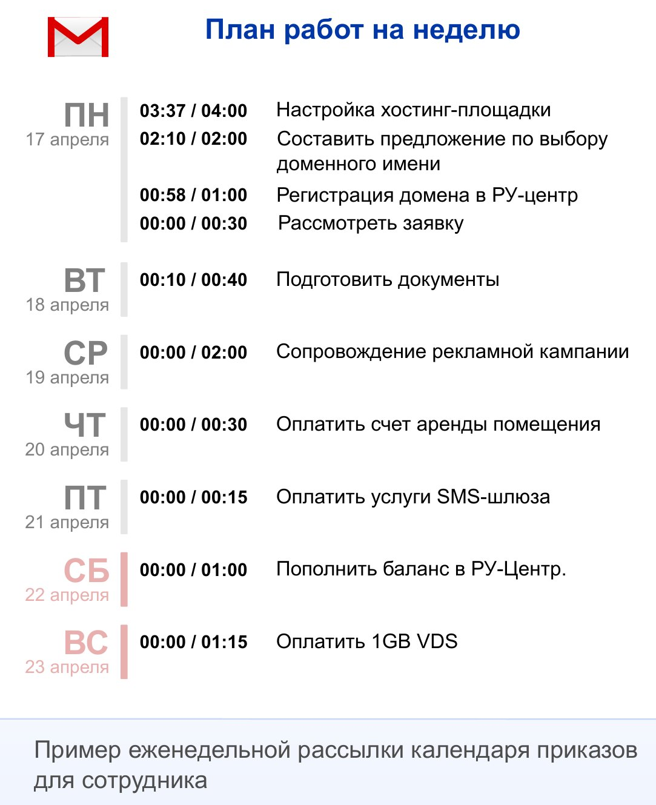

TeamTime BPM
Arbeit wird in Zeit gemessen, nicht in Geld. Prozesse, Aufgaben und Berichte in einem System — damit die Leitung die tatsächliche Arbeit des Teams sieht und jeder Mitarbeiter seinen Beitrag und sein Wachstum.
max(R) = max(A)
Maximaler Respekt bei maximalen Anforderungen —
das Modell von A.S. Makarenko als Werkzeug
Wie TeamTime entstand
TeamTime wurde nicht „für den Markt“ erfunden. Es entstand aus der Aufgabe eines Leiters eines kleinen Teams: sehen, was wirklich erledigt ist, die Arbeit jedes Einzelnen fair bewerten — und nicht in Kontrolle zu versinken.
Welches Problem gelöst wurde
- Arbeit ist unsichtbar. Ein Task-Tracker zeigt, dass eine Aufgabe geschlossen ist, aber nicht, wie viel Arbeit darin steckt und wie sie verlief.
- Geld ist ein schlechtes Maß. Stundensätze sind verschieden, Preise ändern sich, und die Frage „was ist diese Arbeit wert“ wird schnell zum Feilschen statt zum Gespräch über das Ergebnis.
- Kontrolle frisst die Leitung auf. Ohne System muss der Direktor jeden persönlich befragen — das kostet Zeit und untergräbt das Vertrauen.
- Buchhaltungssysteme sind für kleine Firmen zu schwer. Um eine Leistungsbestätigung auszustellen und den Lohn zu berechnen, sollte kein eigenes Buchhaltungspaket nötig sein.
Webstudio „Media Publish“
Das Team arbeitet nach dem Prinzip „Respekt + Anforderungen“. Es entsteht der Bedarf, die Arbeit jedes Einzelnen festzuhalten: Aufgaben, Berichte, Stunden.
Erste Version von TeamTime
Erfassung, Kalender, BPM-Prozesseditor, Karriere, Formalitäten und ein Kundenportal. Das System wird zum wichtigsten Werkzeug des Studios.
Einzelunternehmer A.N. Gavrilyuk
TeamTime BPM ist weiterhin als Projektmanagement-Werkzeug im Einsatz — bis heute.
Verteiltes F&E-Team
Ein funktionsfähiger Prototyp von TeamTime BPM steuert die Arbeit des verteilten Embedded-Software-Teams der OOO „Rostower Elektronikwerk“.
Neue Fassung
Das Konzept wird als Werkzeug des Makarenko-Modells formuliert; Roboter und KI-Agenten kommen als Ausführende in die Prozesse.
Zeit statt Geld — das Äquivalent nützlicher Arbeit
In TeamTime ist das Maß der Arbeit die Stunde bestätigter nützlicher Arbeit. Geld ist eine abgeleitete Größe: Es wird aus Stunden berechnet, nicht umgekehrt.
Für alle gleich verständlich
Eine Arbeitsstunde verstehen Direktor, Ingenieur und Kunde gleichermaßen. Stunden lassen sich vorab vereinbaren, mit dem Plan vergleichen und ohne Feilschen besprechen.
Verliert nicht an Wert
Preise und Kurse ändern sich, eine Arbeitsstunde bleibt eine Stunde. Die gesammelte Erfahrung eines Mitarbeiters wird in Stunden ausgedrückt und behält ihren Sinn über Jahre.
Nur Nützliches zählt
Eine Stunde zählt, wenn ein Bericht und ein angenommenes Ergebnis dahinterstehen. Bloße „Anwesenheit“ im System wird nicht zu Lohn.
Vergleichbar über Berufe hinweg
Programmierer, Designer und Administrator arbeiten im selben Maß. Unterschiede der Qualifikation stecken im Stundensatz, nicht in einer anderen Erfassungslogik.
Wächst mit dem Menschen
Bestätigte Stunden in einem Fachgebiet sind echte Erfahrung. Wer Erfahrung sammelt, steigt in die nächste Stufe mit höherem Stundensatz auf.
Ehrliche Wirtschaftlichkeit
Die Kosten eines Projekts oder Prozesses werden aus realen Stunden berechnet (Activity Based Costing), nicht aus Schätzungen „über den Daumen“.
So funktioniert TeamTime
Fünf Prinzipien, auf denen das System beruht. Die Screenshots stammen aus der ersten, russischsprachigen Version der Oberfläche; die Logik dahinter ist unverändert.
Zeiterfassung und Berichte
Ein Mitarbeiter öffnet eine Aufgabe und klickt auf „Start“ — der Zeitzähler läuft. Danach schreibt er einen kurzen Bericht: was getan wurde, welches Ergebnis vorliegt, wie lange es gedauert hat.
- Der Bericht ist das wichtigste Dokument des Tages: kurz, sachlich, mit Zeitangabe.
- Der Feed „Was machen wir gerade?“ zeigt die Berichte des Teams in Echtzeit.
- Plan- und Ist-Stunden sind für jede Aufgabe, jedes Projekt und jeden Mitarbeiter sichtbar.
- Die Leitung führt über Berichte, nicht über Nachfragen.

Prozesse, Projekte, Aufgaben — die Grundeinheiten von Planung und Erfassung
Wiederkehrende Arbeit wird einmal als Prozess beschrieben und danach aus einem Vorlagenkatalog gestartet. Jede Aufgabe ist als Pflichtenheft formuliert: was gegeben ist, was gefordert ist, wie es zu tun ist. Unklare Aufträge gibt es im System nicht.


Die richtige Information zur richtigen Zeit an die richtige Person
Der Prozess gibt die Arbeit selbst entlang der Kette weiter: Sobald ein Beteiligter seinen Bericht abgibt, erhält der nächste seine Aufgabe — mit Anleitung und Eingangsdaten.
- Mitarbeiter sehen nur ihre eigenen Aufgaben und die Prozesse, an denen sie beteiligt sind, und erhalten einen Wochenplan.
- Die Leitung erhält Berichte und Übersichten nach Projekten, Arbeitsarten und Personen.
- Kunden sehen in ihrem Portal (C-Report) den Arbeitsfortschritt, Berichte sowie Plan- und Ist-Stunden.

Transparenz der Prozesse
Ein Prozess in TeamTime ist ein lebendiges Diagramm, keine Vorschrift im Ordner. Im Diagramm sieht man, wer jeden Schritt ausführt, wo die Arbeit gerade steht und wie viele Stunden geplant und verbraucht sind.
- Vereinfachte BPMN-Notation — 10 Standardelemente, verständlich ohne Schulung.
- Kostenanalyse des Prozesses nach Ist-Stunden.
- Man sieht sofort, bei welchem Schritt Schwierigkeiten oder Fehler auftraten.
- Archiv abgeschlossener Prozesse — die Geschichte, wie die Arbeit tatsächlich gemacht wurde.

Aufgaben für Roboter und KI sind Teil der Prozesse
Das TeamTime-Aufgabenformat — „Gegeben · Gefordert · Anleitung“ — ist im Grunde eine fertige Aufgabenstellung für einen KI-Agenten. Deshalb wird ein Roboter zu einem weiteren Prozessbeteiligten: mit eigener Bahn im Diagramm, eigenen Aufgaben und eigenen Berichten.
- Routineschritte (Datensammlung, Dokumententwürfe, Prüfungen) erledigt ein Agent.
- Der Agent liefert seinen Bericht im selben Format wie ein Mensch — die Arbeit bleibt transparent.
- Entscheidung und Qualitätskontrolle bleiben beim Menschen.
- Man sieht, wie viel Arbeitszeit die Automatisierung freigesetzt hat.
Softwaremodule
Die Module arbeiten auf einer gemeinsamen Basis von Mitarbeitern, Projekten und Aufgaben. Die Einführung kann schrittweise erfolgen: mit der Erfassung beginnen und die übrigen nach Bedarf ergänzen.
TeamTime Erfassung
Der Kern des Systems: Mitarbeiter, Projekte, Arbeitsarten, Aufgaben und Berichte, Abschlussberichte.
Mitarbeiterportal
- Zeitzähler für die Aufgabenbearbeitung.
- Aufgabentext in Form eines Pflichtenhefts.
- Berichtseingabe; Filter der Aufgaben nach Status, Dringlichkeit, Projekt.
Leitungsportal
- Zeit- und Kostenaufwand nach Projekten, Arbeitsarten und Mitarbeitern.
- Berichte der Mitarbeiter und Abschlussberichte für einen Zeitraum.
Kundenportal (C-Report)
- Arbeitsjournal, Berichte sowie Plan- und Ist-Stunden je Projekt.
- Zwischenergebnisse, Materialien und Anleitungen.

TeamTime Calendar
Der Aufgabenkalender des Teams: wer was wann tut.
- Ansichten Monat / Woche / Tag, Aufgaben per Drag-and-drop verschieben.
- Filter nach Mitarbeitern, Projekten, Arbeitsarten, Prozessen.
- Teilaufgaben und Kontrolle der Plan-/Ist-Stunden unter deren Berücksichtigung.
- Wiederkehrende Aufgaben: täglich, wöchentlich, monatlich, jährlich.
- Wöchentlicher Arbeitsplan per E-Mail an jeden Mitarbeiter.

TeamTime BPM
Ein Editor für Geschäftsprozesse, in dem das Diagramm zugleich die Aufgabenliste und die Logistik ihrer Ausführung ist.
- Vereinfachte BPMN-Notation aus 10 Standardelementen.
- Jede Aktion im Diagramm ist eine Aufgabe mit Ausführendem, Plan-Stunden und Anleitung.
- Prozessstart: Aufgaben gehen automatisch von einem Ausführenden zum nächsten.
- Kostenanalyse (ABC), Vorlagenkatalog, Archiv, Tätigkeitsbereiche.
- Ein Schritt kann von einem Menschen, einem Roboter oder einem KI-Agenten ausgeführt werden.
TeamTime Karriere
Erfassung der tatsächlichen Erfahrung nach Fachgebieten und ein Entwicklungsprogramm für jeden Mitarbeiter.
- Zielvektor. Bei der Einstellung legen Leitung und Mitarbeiter gemeinsam berufliche Ziele fest, die mit den Zielen des Unternehmens abgestimmt sind.
- Tatsächliche Erfahrung. Bestätigte Stunden aus Aufgaben sammeln sich automatisch nach Fähigkeiten und Fachgebieten.
- Stufen und Stundensatz. Transparente Vergütung — vom Praktikanten bis zur Leitung; Aufstieg nach bestätigten Stunden.
- Weiterbildung. Ein individueller Lernpfad: Lehrplan als BPMN-Prozess, Lernaufgaben mit Berichten und ein Bewertungsbogen der Fähigkeiten zum Abschluss.


TeamTime Formalitäten
Erstellung von Dokumenten aus Vorlagen — aus den Daten, die schon im System sind: Prozesse, Berichte, Kundendaten und Mitarbeiterdaten.
- Für Kunden: Kostenvoranschläge, Leistungsbestätigungen, Rechnungen, Standardverträge.
- Für Mitarbeiter: Verträge, Auszahlungsbelege, Lohnberechnung.
- Für Interessenten: ein Online-Leistungsrechner auf der Website, aufgebaut aus einem Prozess.
- Eigene Vorlagen mit Variablen.


TeamTime — ein Werkzeug des Makarenko-Modells zur Führung eines Kollektivs
Das Modell von A.S. Makarenko beruht auf der Ordnung des Kollektivs, nicht auf den persönlichen Eigenschaften der Leitung. TeamTime macht diese Ordnung zur täglichen Praxis: Jedes Prinzip des Modells hat im System einen konkreten Mechanismus.
max(R) = max(A)
Hohe Anforderungen an einen Menschen drücken Respekt vor ihm aus, Respekt ohne Anforderungen bedeutet Gleichgültigkeit. In TeamTime sind Anforderung und Respekt eine Handlung: eine klar gestellte Aufgabe mit ehrlich erfasster Arbeit.
| Prinzip des Modells | Wie TeamTime es umsetzt |
|---|---|
| Maximale Anforderungen | Jede Aufgabe ist „Gegeben · Gefordert · Anleitung“ mit Plan-Stunden. Das Ergebnis durchläuft eine Qualitätskontrolle; gezählt wird nur bestätigte Arbeit. |
| Maximaler Respekt | Kein Mikromanagement: Die Leitung sieht die Arbeit über Berichte. Die Vergütung ist vorhersehbar und wird aus Stunden berechnet; der Beitrag jedes Einzelnen ist für das Team sichtbar. |
| Der Bericht des Kommandeursin der Kommune — täglich | Tagesbericht des Mitarbeiters: kurz, begründet, mit Zeitangabe. Der Feed „Was machen wir gerade?“ statt Nachfragen. |
| Das Kollektiv als Werkzeug | Prozesse verbinden Menschen: Das Ergebnis des einen ist die Eingabe des anderen. Ein gemeinsames Arbeitsjournal macht das Team für sich selbst sichtbar. |
| Perspektivlinien | Der Zielvektor im Modul Karriere: Die nahe Perspektive ist die nächste Stufe, die ferne ein neues Fachgebiet. |
| Parallele Einwirkung | Die Leitung steuert die Arbeitsweise — Prozesse und Vorlagen — statt jeden Menschen einzeln. |
| Produktive Arbeit und Lernen | Lernaufgaben sind normale Prozessaufgaben mit Berichten und Stunden; der individuelle Lernpfad läuft im selben System. |
| Traditionen | Der Katalog der Prozessvorlagen bewahrt, „wie man es bei uns macht“, und gibt es an neue Mitarbeiter weiter. |
Mehr über das Modell
Die Geschichte der Kolonie und der Kommune, die Regeln der kollektiven Arbeit, Erfahrung mit dem Modell seit 2008Einführungsvarianten
Der Funktionsumfang ist in beiden Varianten gleich. Der Unterschied: wo die Daten liegen und wer den Server betreut.
SaaS
TeamTime im Cloud-Hosting
- Sofort loslegen — ohne Server und ohne Administrator.
- Updates, Datensicherung und Support übernimmt der Entwickler.
- Zugriff per Browser für Mitarbeiter, Leitung und Kunden von überall.
- Ideal für verteilte und Remote-Teams.
Passt zu: kleinen Unternehmen, Studios, Projekt- und Remote-Teams.
Personal server
Im internen Netz des Unternehmens
- Daten über Arbeit, Menschen und Prozesse verlassen den Unternehmensperimeter nicht.
- Installation auf dem Server des Kunden; Betrieb in einem geschlossenen Netz.
- Integration mit internen Systemen und eigenen KI-Agenten.
- Prozess- und Dokumentvorlagen nach den Vorschriften des Unternehmens.
Passt zu: Industrieunternehmen, F&E-Abteilungen, Organisationen mit Anforderungen an die Informationssicherheit.
Einführung besprechen
Ich zeige den funktionierenden Prototyp, berichte aus der Praxis der Führung eines verteilten Teams und helfe bei der Wahl der Einführungsvariante.